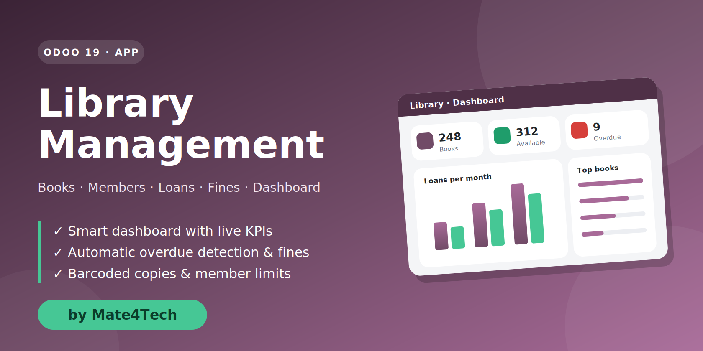

Library Management for Odoo 19
This guide explains how to install, configure and use the module day to day. It is written for librarians, administrators and Odoo integrators.
What you get
Live Dashboard
Seven clickable KPIs, loans-vs-returns chart, most borrowed books, category split, overdue list and recent activity — all in one screen.
Rich Catalogue
Books with cover, ISBN, multiple authors, category, publisher, year and replacement price. Kanban, list and form views.
Barcoded Copies
Every physical copy gets an automatic barcode and its own status: Available, Borrowed, In Maintenance or Lost.
Members
Membership numbers, expiry dates, personal loan limits, one-click yearly renewal and a complete loan history per member.
Complete Loan Cycle
Borrow, renew, return or mark as lost — with built-in rules that stop loans for expired members or unavailable copies.
Automatic Overdues
A daily scheduled action flags late loans, posts a note in the chatter and refreshes fines automatically.
Fine Management
Configurable daily fine rate, lost-book charge at replacement price, one-click “register payment”, unpaid-fine blocking.
Reporting
Graph and pivot analysis of loans by month, status, category, book or member. Export to Excel with a click.
Role-based Security
Librarian and Manager groups. Administrators are managers automatically. Full audit trail through chatter.
Module structure
| Model | Technical name | Purpose |
|---|---|---|
| Book | library.book | Catalogue entry (title level) |
| Copy | library.book.copy | Physical item with barcode & status |
| Author / Category | library.author, library.category | Classification of books |
| Member | library.member | Borrower linked to a contact |
| Loan | library.loan | Borrowing transaction, fine and history |
1. Installation
- Copy the
library_managementfolder into one of your Odoo addons paths. - Restart the Odoo service.
- Activate Developer Mode (Settings → Activate the developer mode).
- Go to Apps → Update Apps List and confirm.
- Remove the “Apps” filter, search for Library Management and click Install.
./odoo-bin -d your_database -i library_management --addons-path=addons,/path/to/custom_addons
-u library_management after replacing the folder with a newer version.2. Configuration
Library policies are stored as system parameters. Edit them in Settings → Technical → System Parameters (developer mode required).
| Key | Default | Description |
|---|---|---|
library.loan_days | 14 | Default loan length in days; also the extension granted by each renewal |
library.fine_per_day | 1.0 | Fine charged per day of delay (in company currency) |
library.max_renewals | 2 | How many times a loan can be renewed |
Per-member limits (Max Simultaneous Loans) and per-book Replacement Price are set on their own forms.
3. Users & access rights
Open Settings → Users & Companies → Users and tick the group you need.
| Group | Can do |
|---|---|
| Library: Librarian | Read the catalogue; create/edit members, copies and loans; run the workflow (borrow, return, renew, lost, register fine). Cannot edit books/authors or delete members. |
| Library: Manager | Everything a librarian can, plus full create/edit/delete on every model and the Configuration menu. |
4. Dashboard
The Dashboard is the first menu of the app and opens by default.

| Block | Meaning | Click action |
|---|---|---|
| Books | Number of catalogue titles | Opens the books kanban |
| Available Copies | Copies on the shelf / total copies | Lists available copies |
| Members | Registered members | Opens members |
| Active Loans | Borrowed + overdue loans | Lists active loans |
| Due Today | Borrowed loans whose due date is today | Lists them |
| Overdue | Loans past their due date | Lists overdue loans |
| Unpaid Fines | Total fines not yet registered as paid | Lists loans with unpaid fines |
Below the tiles you find the Loans & Returns chart (6 months), Most Borrowed Books, Overdue Loans (click a row to open the loan), Loans by Category and Recent Activity. Use Refresh to reload and + New Loan to start a loan immediately.
5. Catalogue
5.1 Creating a book
- Go to Library → Catalogue → Books and click New.
- Enter the title, ISBN, authors (type to create on the fly), category, publisher, year, pages and replacement price.
- Upload a cover image (optional).
- Save, then use Add Copy or the Copies tab to register physical copies.


5.2 Copies & barcodes
Each copy receives an automatic barcode (BC000001, BC000002…). Statuses:
Available can be lent Borrowed set automatically on confirmation In Maintenance temporarily withdrawn Lost set when a loan is marked lost
5.3 Authors & categories
Authors are under Catalogue → Authors (with biography and photo). Categories are under Configuration → Categories (editable list).
6. Members
- Open Library → Circulation → Members and click New.
- Select (or create) the Contact. One contact can be a member only once.
- Set the Membership Expiry (default: one year) and Max Simultaneous Loans (default: 5).
The member number (MEM00001…) is generated automatically. The Renew Membership button adds one year. Expired members show a red ribbon and appear in red in the list. The Loans smart button shows their full borrowing history.
7. Loans

7.1 Lending a book
- Click New in Circulation → Loans.
- Choose the Member and an available Copy (search by barcode or title).
- The Due date is proposed from the loan date +
library.loan_days; edit it if needed. - Click Confirm Loan.
Confirmation is refused when:
| Rule | Message |
|---|---|
| Membership expired | “… membership has expired.” |
| Member reached the loan limit | “… has reached the limit of N loans.” |
| Member has unpaid fines | “… has unpaid fines. Please settle them first.” |
| Copy not available | “This copy is not available.” |

7.2 Renewing
Click Renew on a borrowed loan: the due date moves by library.loan_days. Renewal is not possible once the loan is overdue or when the renewal limit is reached.
7.3 Returning
Click Return. The return date is set to today, the copy becomes available again and, if the book is late, the fine is posted in the chatter.
7.4 Lost books
Click Mark as Lost (a confirmation is requested). The copy is set to Lost and the fine becomes the book’s Replacement Price.
8. Fines
fine = days_late × library.fine_per_day (borrowed / overdue / returned) fine = book.price (lost) days_late = max(0, (return_date or today) − due_date)
The fine is stored on the loan and refreshed every night while the book is still out. When the member pays, open the loan and click Register Fine Payment; the loan then shows a green Fine Paid ribbon and the member can borrow again. A member’s total outstanding amount is visible on the member form and on the dashboard.
9. Reporting
Open Library → Reporting → Loan Analysis. Switch between graph, pivot and list, group by month, status, category, book or member, and export any view to Excel.

10. Scheduled action
Library: Update Overdue Loans runs once a day (Settings → Technical → Scheduled Actions). It moves late loans from Borrowed to Overdue, writes a note in the chatter and recalculates fines. You can run it manually with Run Manually at any time.
11. FAQ & troubleshooting
The Library menu is missing
Your user needs the Library: Librarian or Library: Manager group.
The dashboard stays blank after an update
Upgrade the module (-u library_management) and hard-refresh the browser (Ctrl+Shift+R) so the new assets load.
A copy is not in the list when creating a loan
Only copies with status Available are offered. Check the copy’s status.
How do I change the fine or loan duration?
Edit the system parameters described in Configuration.
Can members have different loan limits?
Yes — set Max Simultaneous Loans on each member.
12. Changelog
| Version | Notes |
|---|---|
| 19.0.1.0.0 | Initial release for Odoo 19: catalogue, copies, members, loans, fines, scheduled overdue detection, dashboard, reporting and security groups. |
13. Support
Questions, bug reports or customisation requests? We are happy to help.
✉ sales@mate4tech.com.au
🌐 mate4tech.com.au
🏢 Mate4Tech
When contacting support please include your Odoo version, the module version and a screenshot of any error.